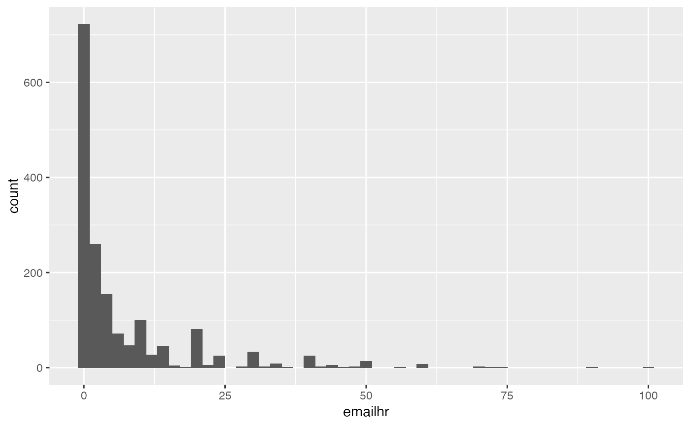

The GSS gathers data on contemporary American society in order to monitor and explain trends and constants in attitudes, behaviors, and attributes. Hundreds of trends have been tracked since 1972. In addition, since the GSS adopted questions from earlier surveys, trends can be followed for up to 70 years. The GSS contains a standard core of demographic, behavioral, and attitudinal questions, plus topics of special interest. Among the topics covered are civil liberties, crime and violence, intergroup tolerance, morality, national spending priorities, psychological well-being, social mobility, and stress and traumatic events.
gss
A tibble with 2,867 rows and 9 variables:
Response to the questions "Over the past five years, have you been harassed by your superiors or co-workers at your job, for example, have you experienced any bullying, physical or psychological abuse?" Possible answers are Yes, No and Does not apply.
Number of minutes spent on email weekly, extra to the hours in emailhrs (e.g. emailmin = 30 for 2.5 hours on email).
Number of hours spent on email weekly.
Number of years in education.
Political views. Possible answers are Extremely liberal, Liberal, Slightly liberal, Moderate, Slghtly conservative, Conservative, Extrmly conservative.
Response to the question "Even if it brings no immediate benefits, scientific research that advances the frontiers of knowledge is necessary and should be supported by the federal government." Possible answers are Strongly agree, Agree, Dont know, Disagree and Strongly Disagree.
Whether respondant uses Snapchat or not.
Whether respondant uses Instagram or not.
Work status.
https://gss.norc.org/Get-The-Data
The data come from the NORC at the University of Chicago
The data has been modified to better serve the goals of introductory data science education. Only 9 of the original 935 variables have been selected for this dataset.
#> Warning: Removed 1218 rows containing non-finite values (stat_bin).